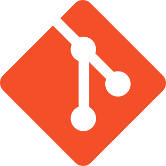

课程简介
Github，全球最大的开源社交编程及代码托管网站。
2006年jquery源码从google code迁移到了github;
2008年Github Inc. 正式成立；
2013年新用户注册数超过了300万，中国用户数居第三位；
2013年总项目数量超过1000万；
2013年152,135,090次代码推送；
…
所有这些数据在今年还在不断飙升中…
作为热爱前端开发、页面重构的你，是否其中一份子？
如果不是，《Githuber》这门课程将手把手带你了解和使用github平台的各种常用功能，让你赶上在世界代码开源分享社区里混迹的潮流。
课程目的
让学员，
- 了解github提供的各种功能；
- 学会使用github注册个人帐号、建立个人源码项目；
- 学会向个人源码项目中提交代码、修改代码、删除代码；
- 学会将个人域名绑定至github项目，利用github托管个人（或组织）的静态站点；
- 学会拉取别人的源码项目并做为个人的开发分支；
- 了解和使用神奇的gh-pages分支；
最终成为能够熟练使用Github的人。
课程对象
前后端开发工程师。
特别适用于没有接触过Github，同时想了解Github，有意愿在Github上创建个人作品站点、分享开源代码的同学。
了解Github的基本功能
Github的基本功能主要包括以下几个方面：
- 源码项目（Repository）
- 源码片段（Gist）
- 站点（Github Pages）
- API
- 个人中心（User）
- 组织（Organization）
明细可参考下图:
创建Github账户
具体注册过程略。
选择付费计划

个人用一般选择免费计划，如果有需要托管一些私密非开源的项目，可以酌情选择其它的计划。
个人主页
注册成功后，可以通过https://github.com/xxx 访问个人主页，其中xxx是用户名
例如我的个人主页 为：https://github.com/mamboer
创建Github组织
在创建了个人账户后，为了方便项目代码的灵活组织，Github支持你创建组织。
组织的应用场景有点像我们线下的现实生活：
- 你可能有一个公司，公司里面的开源项目便适合挂在组织下面
- 你可能有三五码友，码友之间一起协作的项目也适合挂在组织下面
- 参加我们今天课程的所有同学，有着了解Github应用的共同兴趣，也可以当成一个小小的组织。
组织名和用户名一样，是具有唯一性的，下面我们为参加本堂课程的同学新建一个组织，名为xtutor（githuber已被抢注~~）。
入口
在个人主页的右上角可以找到创建组织的入口：
表单
填写组织表单：
管理界面
创建完成后的管理界面：
至此，我们学会了在github上创建个人账户、组织，这些信息存储在github服务器上的，与我们平时工作的项目代码还无法建立联系。如何建立github和本地项目代码间的联系呢？我们需要使用GIT客户端。
搭建Git客户端环境
对于Github的各种基本功能，为了降低非开发者的使用门槛，Github平台提供了非常完善的体验良好的基于图形界面的操作；同时也为开发者提供了基于命令行的高效操作方式。
本课程将着重使用基于命令行的操作方式，很多习惯图形界面操作的同学一开始会不习惯，但坚持下去，最后你会喜欢上便捷的命令行操作的。
在介绍源码项目相关功能之前，我们需先在自己的电脑上搭建Git的客户端环境，因为Github主要使用GIT这个分布式的版本控制系统来管控源码，尽管它也支持SVN。
既然使用基于命令行的操作方式，我们需要什么？一个能够执行各种Git命令的给力的命令行终端。
在windows下搭建Git客户端环境-Git Bash
提到windows的命令行终端，大多数人会联想到CMD，我要推荐的是Git Bash，它模拟linux下的命令行终端bash，因而Git好友度更高。要知道Git本身也是linux阵型的产物~~

下载和安装Git Bash非常简单，去msysgit.github.io 下载安装msysgit即可。
安装完毕后打开Git Bash验证是否安装成功：

在MAC系统下搭建Git客户端环境
MAC下OSX 10.9 (Mavericks)和10.10(yosemite)貌似默认安装了GIT。
可先到终端下利用git --version验证下是否有git，如果没有可利用homebrew安装git。
安装homebrew
灰常简单，参考brew.sh
安装git
brew install git
安装完毕后打开终端验证是否安装成功：